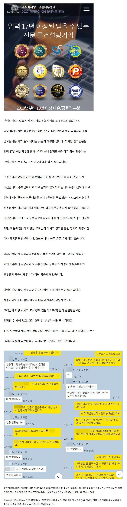
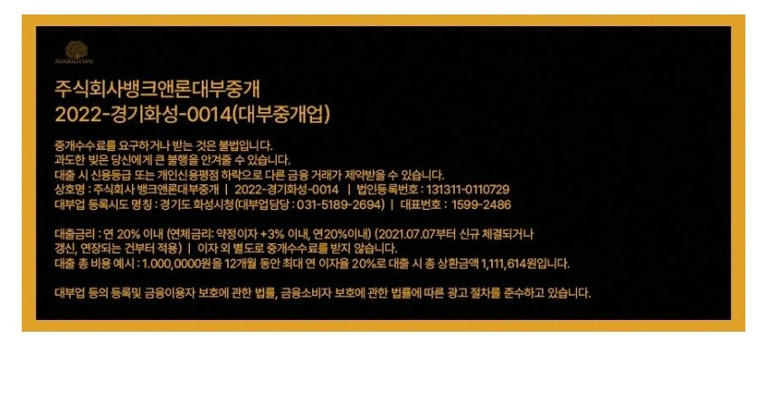

대출사례[자동차담보대출] 주부(무직), 전날 3천이상 대출받고 신청주셨지만 오전내 3990만 오토론 승인내어드림. (차량이 본인이 타는게 아니여서 등록증과 차량 사진없었지만 문제없이 매우 빠르게 승인진행 해드림!!)원본 등록일 2026.03.26 · 글 번호 3861 · 백업 당시 조회수 182  상담신청 -> https://cafe.naver.com/cityman88/29497 http://youtube.com/watch?v=PDxvfq_jwhw&time_continue=1&source_ve_path=NzY3NTg&embeds_referring_euri=https%3A%2F%2Fwww.banknloan.kr%2F  https://cafe.naver.com/cityman88/310530